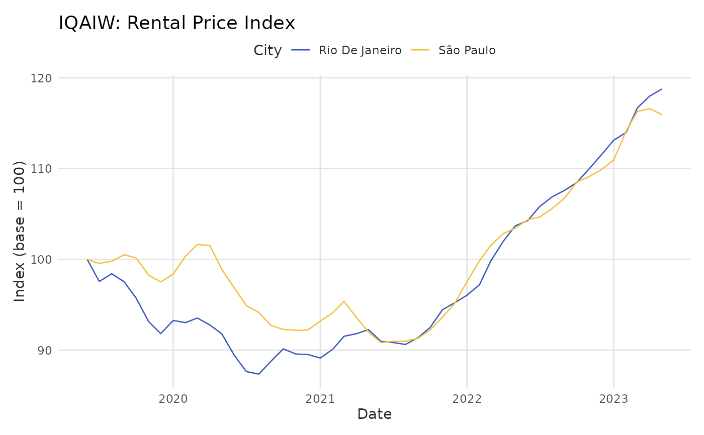

Historical rental price index data from QuintoAndar. This is the legacy IQA
index, which has been superseded by the IQAIW (see iqaiw).
Format
A data frame with 96 observations and 6 variables:
- date
Date of the observation (first day of month)
- name_muni
Name of the municipality (city)
- index
Rental price index, normalized to 100 at first observation
- chg
Monthly percent variation of the index (decimal form)
- acum12m
12-month accumulated variation of the index (decimal form)
- price_m2
Estimated rental price per square meter (R$/m²)
Examples
# To visualize the dataset
head(iqa)
#> # A tibble: 6 × 6
#> date name_muni index chg acum12m price_m2
#> <date> <chr> <dbl> <dbl> <dbl> <dbl>
#> 1 2019-06-01 Rio De Janeiro 100 NA NA 32.5
#> 2 2019-07-01 Rio De Janeiro 97.6 -0.0243 NA 31.7
#> 3 2019-08-01 Rio De Janeiro 98.4 0.00869 NA 32.0
#> 4 2019-09-01 Rio De Janeiro 97.5 -0.00895 NA 31.7
#> 5 2019-10-01 Rio De Janeiro 95.7 -0.0187 NA 31.1
#> 6 2019-11-01 Rio De Janeiro 93.1 -0.0269 NA 30.2
str(iqa)
#> tibble [96 × 6] (S3: tbl_df/tbl/data.frame)
#> $ date : Date[1:96], format: "2019-06-01" "2019-07-01" ...
#> $ name_muni: Named chr [1:96] "Rio De Janeiro" "Rio De Janeiro" "Rio De Janeiro" "Rio De Janeiro" ...
#> ..- attr(*, "names")= chr [1:96] "Rio De Janeiro" "Rio De Janeiro" "Rio De Janeiro" "Rio De Janeiro" ...
#> $ index : num [1:96] 100 97.6 98.4 97.5 95.7 ...
#> $ chg : num [1:96] NA -0.02434 0.00869 -0.00895 -0.01871 ...
#> $ acum12m : num [1:96] NA NA NA NA NA NA NA NA NA NA ...
#> $ price_m2 : num [1:96] 32.5 31.7 32 31.7 31.1 ...
# Plot index over time for all cities
library(ggplot2)
ggplot(iqa, aes(x = date, y = index, color = name_muni)) +
geom_line() +
scale_color_benvi_d(pal_name = "qual_9", name = "City") +
labs(
title = "IQAIW: Rental Price Index",
x = "Date",
y = "Index (base = 100)"
) +
theme_benvi()
